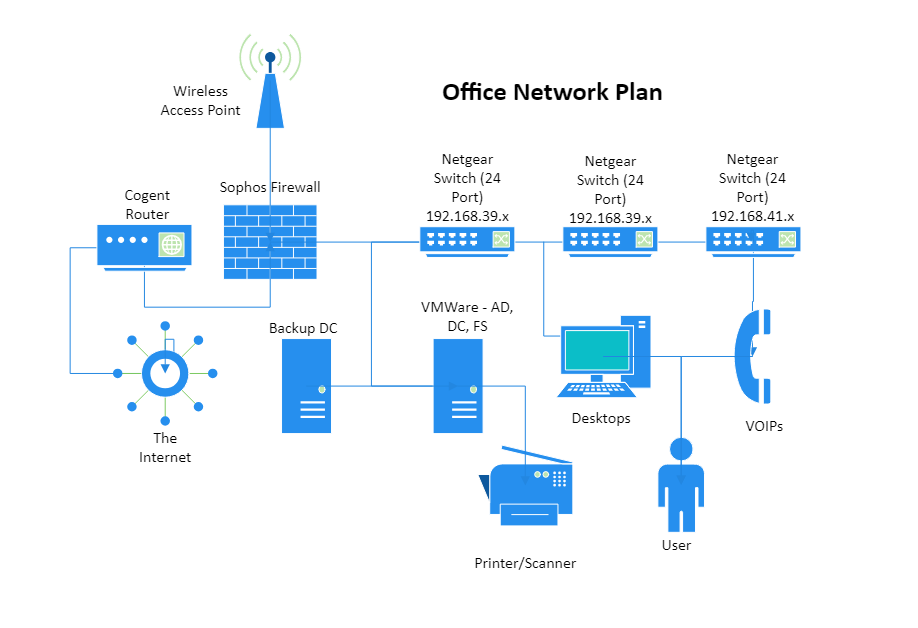
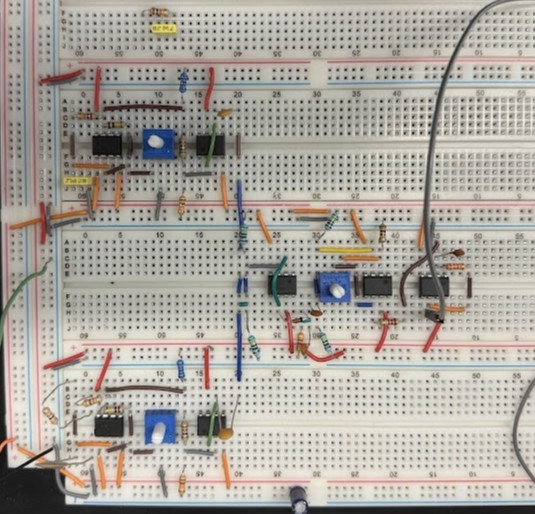

Projects
- Network Diagram | Microsoft Visio (July 2023): Compiled documentation of network infrastructure at one of Ana’s mid-sized clients. Learned how each part of the client's environment interacted with the others. Utilized the diagram as a map whenever there is any potential internet outage.

- Game Portfolio | C, Python, Git (Jan. 2024 – May 2024): Made games in Programming for Electrical Engineers, a basic computer science class at Cooper Union. Developed SOS, a game like Tic Tac Toe but with a greater degree of difficulty, programmed in C. Created Uno, the popular card game where friendships are destroyed, programmed in Python. Designed Wheel of Fortune, the well-known TV game show, programmed in Python.
- AskTCB Chatbot | Python, NodeJS, Microsoft Azure OpenAI, Git (June 2024 – Present): Created for The Conference Board (a client of Ana’s Cloud) allowing users to preview TCB’s subscription-based content. Wrote a custom NodeJS script to parse through TCB’s various documents, vectorize its contents, and upload it to an Azure AI Search Index. Customized an open-source ChatGPT app to connect to the search index and a Microsoft Bing API, so user can query relevant topics to AskTCB. The chatbot now lives on TCB's homepage to be used by members of The Conference Board.
- Theremin | Electrical Engineering (December 2024): Sophomore Electrical Engineering Projects included reverse engineering and building a Theremin, a musical instrument that produces notes based on proximity to an antenna. Over the semester, components were assembled on breadboards, culminating in a functional Theremin for hands-on demonstration.
